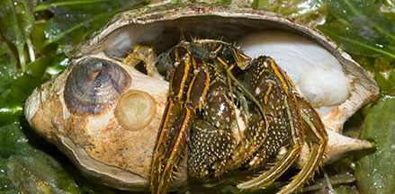

|
|
| shelled snails text index | photo index |
| Phylum Mollusca > Class Gastropoda |
| Slipper
snails Family Calyptraeidae updated Jul 2020 Where seen? These strange snails are almost always found on large shells inhabitated by hermit crabs. They are also seen on the undersides of large living horseshoe crabs. What are slippers snails? Slipper snails are NOT bivalves (like oysters). They are gastropods that belong to the Family Crepidulidae. Features: 2-3cm. Shell conical or flat domed. Several may be found stuck firmly onto inside of a shell occupied by a hermit crab. They take advantage of the constant current of freshly oxygenated water that the hermit crab creates for itself. They are also found on the underside of living horseshoe crabs. Sometimes confused with limpets which are also gastropods but which can move about. Here's more on how to tell apart limpets, slipper snails and similar animals. What do they eat? Slipper snails filter feed and possibly also gather the leftovers of the hermit crab's meals. Slipper snail babies: Slipper snails can change gender. They are usually found in pairs. The larger one is the female and the smaller one male. When the smaller one grows big enough, it will change into a female! The females produce flask-shaped capsules with several eggs in one capsule. The capsules are brooded in the mantle cavity. |
 Two different kinds of slipper snails on this shell occupied by a hermit crab. Changi, Apr 05 |
 The smaller shell is usually the male. Chek Jawa, Mar 05 |
 Tanah Merah, Sep 13 |

| Some Slipper snails on Singapore shores |

| Family
Calyptraeidae recorded for Singapore from Tan Siong Kiat and Henrietta P. M. Woo, 2010 Preliminary Checklist of The Molluscs of Singapore. ^from WORMS
|
Links
References
|